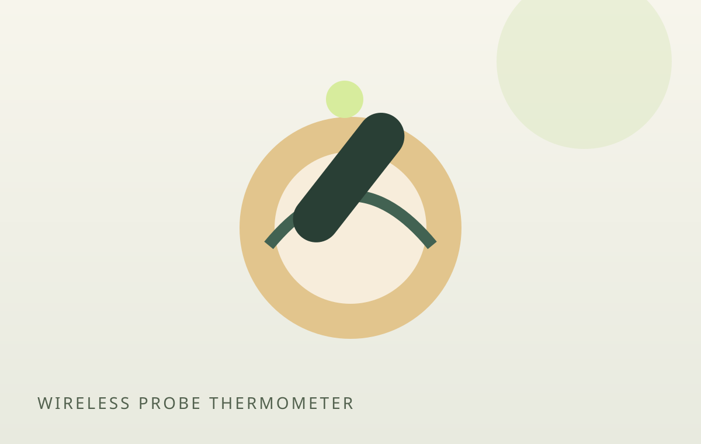

Seven things to check before you click Buy
A two-minute pass that catches most buyer's remorse while it's still a browser tab.
Most buyer's remorse on appliances is created in the ninety seconds before checkout, when nobody checks anything because the page feels checked already. Here is the two-minute pass, in the order that catches the most problems fastest. Every item is verifiable by you, today, without our opinion.
The seven
- The model number, not the title. Titles sell; model numbers identify. Find the exact model number in the listing's product details or "Best Sellers Rank" block, and keep it. Warranties, manuals, and parts all key off that string — and sibling models in the same family look identical in photos and cook differently.
- The price, live, at that moment. Do not carry a price over from a review, a screenshot, or our page. Whatever any article shows, the retailer's current number is the only one that checks out at the register.
- The return window — in the retailer's own words. Open the returns policy page for the item category (electronics and small appliances sometimes differ from the general policy, and "free returns" can exclude freight for oversized units). The question to answer is not "can I return it" but "what does returning it cost me in time and shipping if I hate it."
- The warranty — at the maker, not the merchant. The maker's warranty page states the term and the claim path; retail protection plans are a separate product with separate terms. Read both, decide once, and don't confuse a third-party plan with a manufacturer's warranty.
- Real dimensions plus clearance, against your real counter. Exterior dimensions, vent clearance from the manual, and cord reach — three numbers, one tape measure. A unit that fits the shelf but not the airflow is a fire-hazard shopping cart moment.
- A recall check, once, before ordering. Search the brand and product type on the CPSC recalls page. A clear result today isn't a promise forever — but a recall you could have seen for free, before paying, is the most expensive surprise in consumer appliances.
- The fine print on "dishwasher safe." Which parts, which rack, and — sometimes hiding in the manual — a "hand washing recommended to preserve coating" note that contradicts the title. If the listing and manual disagree, the manual wins and the coating lives shorter than the marketing implies.
Why this list, and not a "top features" list
Features sell units; friction returns them. The seven checks above are all friction, all documented, all readable in two minutes. If a listing can't survive them, that's the listing's problem — not yours after it arrives.
Return-policy details vary by category, seller, and market — always read the policy shown at checkout for your order. Recall search is public at cpsc.gov/Recalls. Maker warranty and manual pages (for example chefman.com's public document library) are free to read before buying.
As an Amazon Associate I earn from qualifying purchases. Nothing on this page is priced by us; every product link goes straight to the retailer and is marked
rel="sponsored".On the shortlist

Chefman 6 Quart Dual-Basket Air Fryer
The one that ends the shoulder-to-shoulder crowding problem
Bullets quote the retailer listing as observed 2026-11-20 — observed listing www.amazon.com listing check in progress
Emeril Lagasse 26QT French Door Air Fryer Oven
The oven-style option for whole chickens and sheet-supper nights
Bullets quote the retailer listing as observed 2026-11-20 — observed listing www.amazon.com listing check in progress

Chefman 8 Quart TurboFry Air Fryer
The single big basket, for batch cooks who don't need two zones
Bullets quote the retailer listing as observed 2026-11-20 — observed listing www.amazon.com listing check in progress

ThermoMaven 1-Second Instant-Read Thermometer
The pocket tool that ends the knife-slash method
Bullets quote the retailer listing as observed 2026-11-20 — observed listing www.amazon.com listing check in progress

CHEF iQ Sense Gen 3 Wireless Probe Set
The one that watches the cook while you're not in the kitchen
Bullets quote the retailer listing as observed 2026-11-20 — observed listing www.amazon.com listing check in progress